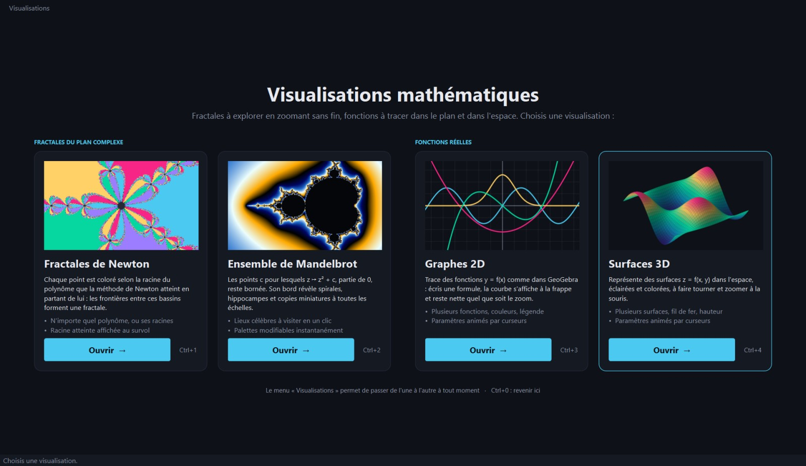
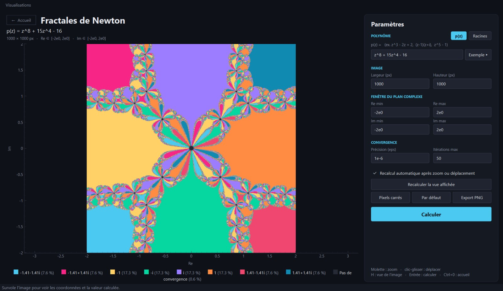
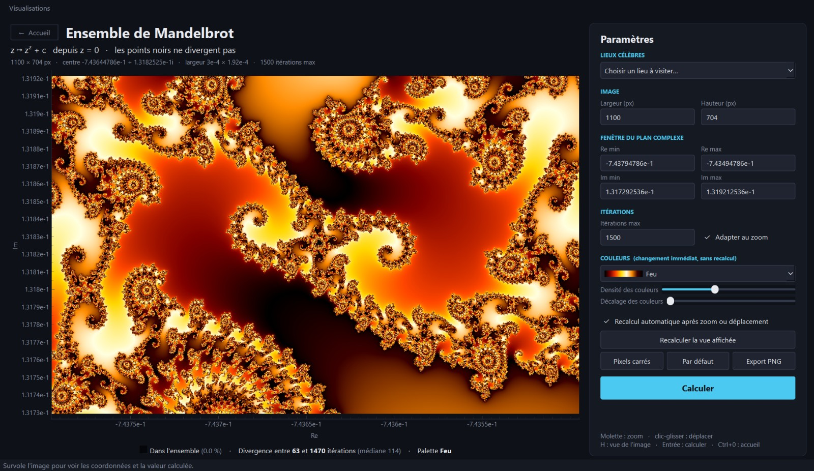
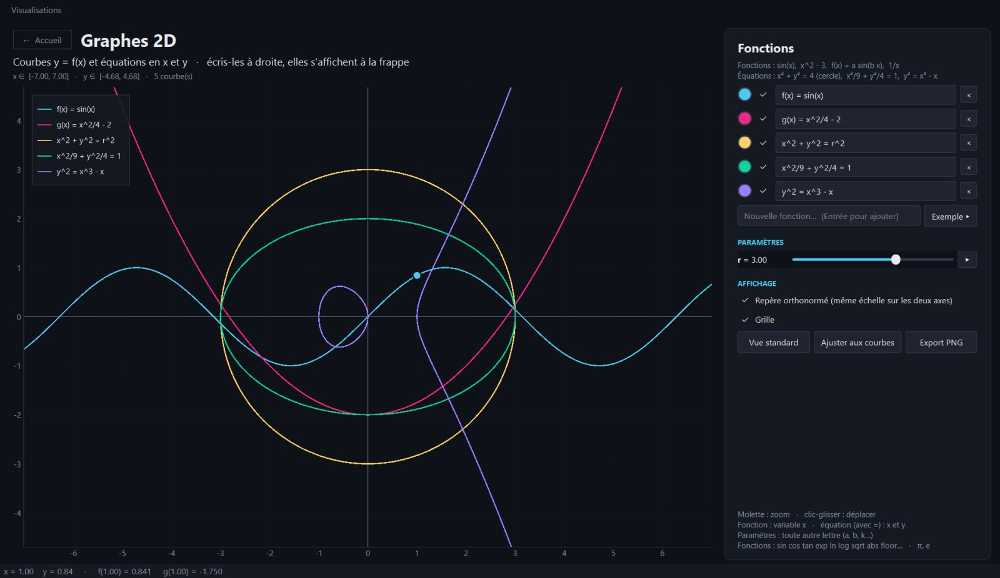
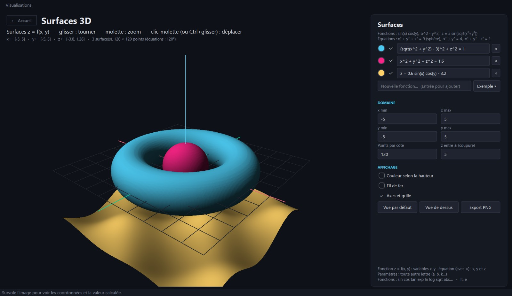

Newton Fractals
Manuel d'utilisation — visualisations mathématiques pour Windows
Newton Fractals réunit quatre outils de visualisation, accessibles depuis une page d'accueil :
Les calculs des fractales sont faits par un moteur C++ multicœur livré avec le logiciel : aucune installation de Python ni d'autre programme n'est nécessaire.
Installation
Configuration : Windows 10 ou 11, 64 bits. La page Surfaces 3D demande une carte graphique compatible OpenGL 2 (c'est le cas de presque toutes).
- Téléchargez
NewtonFractals-Setup-x.y.z.exedepuis la page Releases du projet. - Lancez-le. Si Windows affiche « Windows a protégé votre ordinateur », cliquez sur Informations complémentaires puis Exécuter quand même (voir Dépannage).
- Choisissez la langue, le dossier d'installation et, si vous le souhaitez, un raccourci sur le Bureau.
- Cliquez sur Installer, puis Terminer : le logiciel se lance.
Par défaut, le logiciel est installé pour votre compte uniquement, dans
%LOCALAPPDATA%\Programs\Newton Fractals, sans demander de droits administrateur. Au début de
l'installation, vous pouvez choisir de l'installer pour tous les utilisateurs (dans C:\Program Files,
avec les droits administrateur).
Le logiciel apparaît ensuite dans le menu Démarrer (Newton Fractals), avec un raccourci vers ce manuel.
Installation sans interface
Pour un déploiement automatisé, l'installateur accepte les options habituelles d'Inno Setup :
NewtonFractals-Setup-1.1.0.exe /VERYSILENT /CURRENTUSER (pour votre compte)
NewtonFractals-Setup-1.1.0.exe /VERYSILENT /ALLUSERS (pour tous, en administrateur)
NewtonFractals-Setup-1.1.0.exe /VERYSILENT /DIR="D:\Outils\Newton Fractals"Premier lancement

La fenêtre s'ouvre en grand sur la page d'accueil. Pour changer de visualisation, utilisez le menu Visualisations, le bouton ← Accueil ou les raccourcis Ctrl+0 à Ctrl+4. Chaque page garde son état quand vous passez à une autre.
Le menu Aide ouvre ce manuel (F1), le dossier de vos données et la fenêtre À propos, qui indique la version installée.
Fractales de Newton

Pour chaque point z du plan complexe, la méthode de Newton calcule z − p(z) / p′(z), encore et encore, jusqu'à atteindre une racine du polynôme p. Le point prend la couleur de cette racine ; les points qui ne convergent pas restent sombres. Les frontières entre bassins sont des fractales.
Choisir le polynôme
- Mode p(z) : tapez le polynôme, par exemple
z^3 - 2z + 2,(z-1)(z+2i)ouz^3 - (1 + 2i)z + 1. Degré 1 à 20, coefficients réels ou complexes. - Mode Racines : donnez directement les racines, séparées par
;, par exemple1 ; -1 ; 0,5+2i. Répéter une racine la rend multiple. - Exemple ▸ propose des polynômes intéressants.
Passer d'un mode à l'autre convertit le contenu du champ. La légende indique la valeur de chaque racine et la part de l'image qu'occupe son bassin.
Paramètres
| Réglage | Rôle |
|---|---|
| Image : largeur, hauteur | Taille du calcul en pixels. Plus grand = plus net, mais plus lent. |
| Fenêtre du plan complexe | Zone affichée : Re min / max et Im min / max. |
| Précision (eps) | Distance à une racine à partir de laquelle le point est considéré comme arrivé. |
| Itérations max | Au-delà, le point est déclaré non convergent. |
Boutons : Calculer, Recalculer la vue affichée, Pixels carrés (ajuste la hauteur), Par défaut, Export PNG.
Naviguer
Molette pour zoomer autour du curseur, glisser pour se déplacer. Avec Recalcul automatique (coché par défaut), la zone visible est recalculée en pleine résolution dès que vous arrêtez de bouger : les détails apparaissent au lieu de pixels agrandis. H revient à la vue de l'image calculée. La valeur sous la souris s'affiche dans la barre d'état.
Ensemble de Mandelbrot

L'ensemble de Mandelbrot contient les points c pour lesquels la suite z₀ = 0, zₙ₊₁ = zₙ² + c reste bornée. La navigation est la même que pour les fractales de Newton, avec en plus :
- Lieux célèbres : vallée des hippocampes, vallée des éléphants, mini-Mandelbrot, zoom profond à 10⁻¹⁰… en un clic.
- Itérations : avec Adapter au zoom, le nombre d'itérations augmente automatiquement quand vous zoomez, pour garder les détails du bord.
- Couleurs : six palettes, densité et décalage des couleurs. Ces réglages s'appliquent instantanément, sans recalcul.
Le zoom s'arrête vers 10⁻¹³ fois la taille des coordonnées : au-delà, la précision des nombres de l'ordinateur ne distingue plus deux pixels voisins.
Graphes 2D

Tapez une fonction par ligne dans le panneau Fonctions : elle est tracée pendant la frappe, et une erreur de syntaxe s'affiche sous la formule.
- Fonctions de x :
sin(x),y = x^2 - 3,f(x) = 2x exp(-x). - Équations en x et y :
x^2 + y^2 = 4(cercle),x^2/9 + y^2/4 = 1(ellipse),y^2 = x^3 - x,x = 2. - Paramètres : toute autre lettre (
a,b,k…) devient un paramètre avec son curseur, que le bouton ▶ anime.
Molette pour zoomer, glisser pour se déplacer : les courbes sont recalculées et restent nettes. Les options affichent les axes, la grille, un repère orthonormé et permettent d'ajuster la vue aux courbes. Un point suit la courbe la plus proche de la souris.
Surfaces 3D

- Surfaces z = f(x, y) :
sin(x) cos(y),z = x^2 - y^2. - Équations en x, y et z :
x^2 + y^2 + z^2 = 9(sphère),(sqrt(x^2 + y^2) - 3)^2 + z^2 = 1(tore),x^2 + y^2 - z^2 = 1(hyperboloïde),x^2 + y^2 = 4(cylindre). - Paramètres avec curseurs animés, comme en 2D. Pendant qu'un curseur bouge, les équations sont dessinées en aperçu rapide, puis en pleine résolution à l'arrêt.
Glisser pour tourner, molette pour zoomer, clic du milieu ou Ctrl + glisser pour déplacer. Les réglages permettent de changer le domaine, la résolution, la limite en z, la couleur (par surface ou par hauteur) et d'afficher le maillage.
Écrire une fonction
| Écriture | Signification |
|---|---|
x^2, x**2, x² | puissances |
2x, x sin(x), (x-1)(x+1), 2pi x | multiplication implicite |
pi ou π, e | constantes |
a sin(b x) | paramètres a et b (valeur 1 au départ, de −10 à 10) |
i (fractales de Newton) | unité imaginaire |
Fonctions disponibles : sin cos tan asin acos atan sinh cosh tanh exp ln log (base 10)
log2 sqrt cbrt abs floor ceil round sign. Les valeurs hors du domaine de définition
(ln(-1), 1/0…) ne sont simplement pas tracées.
Raccourcis clavier
| Touche | Action |
|---|---|
| Ctrl+0 | Page d'accueil |
| Ctrl+1 … Ctrl+4 | Newton, Mandelbrot, Graphes 2D, Surfaces 3D |
| Molette | Zoom |
| Glisser | Déplacer (2D), tourner (3D) |
| H | Fractales : revenir à la vue de l'image calculée |
| Entrée dans un champ | Fractales : calculer · 2D / 3D : ajouter la fonction |
| F1 | Ce manuel |
| Ctrl+Q | Quitter |
Fichiers et données
| Quoi | Où |
|---|---|
| Logiciel | %LOCALAPPDATA%\Programs\Newton Fractals (ou C:\Program Files\Newton Fractals) |
| Derniers paramètres, fonctions, dernier calcul | %LOCALAPPDATA%\NewtonFractals (menu Aide › Ouvrir le dossier des données) |
| Images exportées (PNG) | Proposées par défaut dans votre dossier Images |
Supprimer le dossier des données remet tous les réglages par défaut.
Mise à jour, désinstallation
Mise à jour : lancez l'installateur de la nouvelle version ; il remplace l'ancienne en gardant vos réglages. Fermez le logiciel avant (l'installateur propose de le faire).
Désinstallation : Paramètres › Applications › Applications installées › Newton Fractals ›
Désinstaller, ou le raccourci Désinstaller Newton Fractals du menu Démarrer. Vos réglages
(%LOCALAPPDATA%\NewtonFractals) et vos images exportées sont conservés ; supprimez ce dossier pour
tout effacer.
Dépannage
« Windows a protégé votre ordinateur » (SmartScreen)
L'installateur n'est pas signé numériquement par un éditeur reconnu. Windows SmartScreen affiche donc un avertissement au premier lancement : cliquez sur Informations complémentaires, puis Exécuter quand même. Téléchargez toujours l'installateur depuis la page officielle des Releases.
.zip de la release avec Python (voir le
README), ou construire le logiciel vous-même
avec python packaging/construire.py depuis les sources.Les fractales ne se calculent pas
La barre d'état de la page indique l'erreur. Le moteur de calcul est le fichier
moteur\moteur.exe du dossier d'installation ; la fenêtre Aide › À propos indique s'il a été
trouvé. Un antivirus peut le mettre en quarantaine : rétablissez-le, ou réinstallez le logiciel.
La page Surfaces 3D affiche un message d'erreur
Elle a besoin d'OpenGL 2. Mettez à jour le pilote de votre carte graphique. Sur une machine virtuelle ou un bureau à distance, OpenGL est souvent indisponible.
Calculs lents
Réduisez la taille de l'image (par exemple 600 × 600) ou le nombre d'itérations. Le moteur utilise tous les cœurs du processeur : fermer d'autres programmes gourmands aide aussi.
Signaler un problème
Ouvrez un ticket sur GitHub, en indiquant la version (Aide › À propos), la page concernée et les paramètres utilisés.